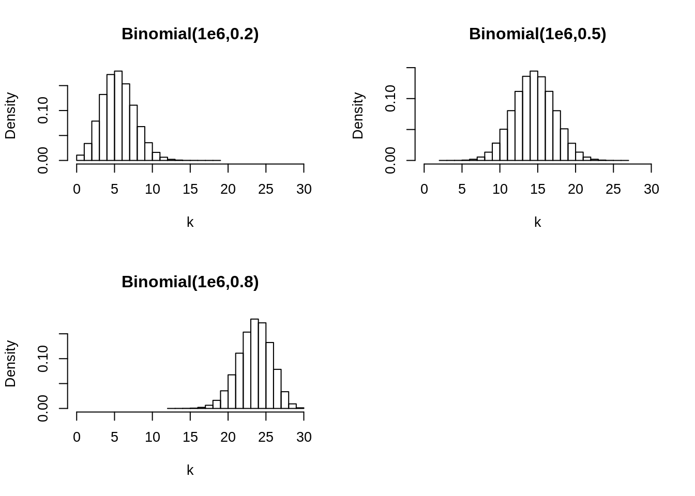
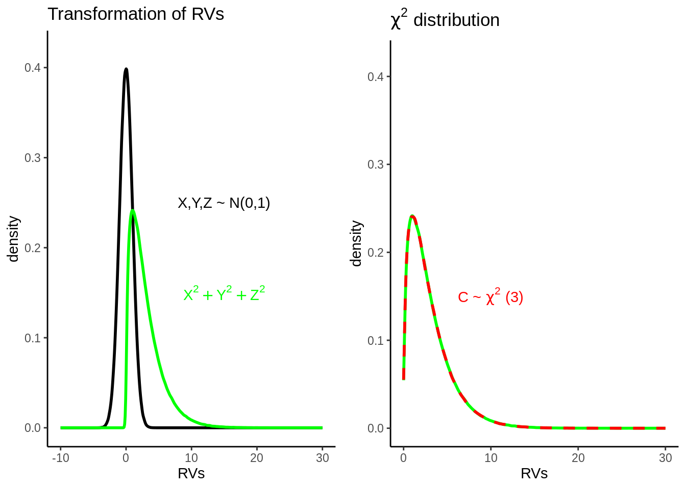
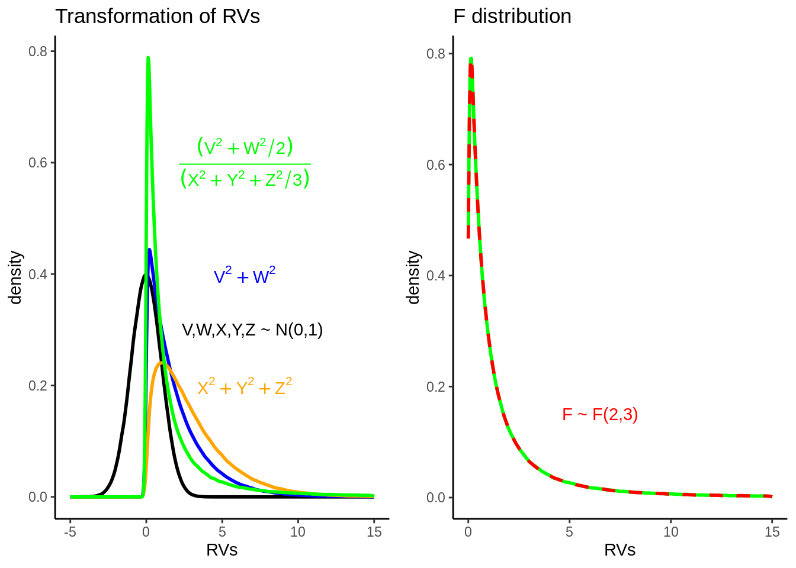

4 Models
4.1 Overview
In the first section we introduce the based on a short revision of the debate between and . After a short overview we formalize the conceptual ideas and the components of the presented model. We finish by discussing further example models.
4.2 Two notions of probability (revisited)
What are probabilities? Two viewpoints can be distinguished: Probabilities exist “outside in the world” or they are “subjective beliefs” (Kruschke 2015). Although both notions imply different approaches how to deal with probabilities, the mathematical properties are quite similar (Kruschke 2015).
4.2.1 Frequentism — Probabilities as properties of the world
When thinking about probabilities as existing “outside in the world” one has to consider the random process that produces the observed data. A Frequentist imagine this random process beeing repeated a large number of times so that the probability of an outcome is the number of observed outcomes devided by the total number of observations \(n\) (Dobson and Barnett 2008). Frequentism is an approach that searches for relative frequencies in a large number of trials (Vallverdú 2016). The parameter \(\theta\), the probability of interest, is the value of the relative frequency when \(n\) becomes infinitely large. Consequently, the parameter \(\theta\) can be estimated from the observed data, \(\hat{\theta}\), by maximizing the likelihood function (see section “Likelihood, Prior & Posterior”) (Dobson and Barnett 2008).
4.2.2 Bayesianism — Probabilities as subjective beliefs
Another notion of probabilities is to think of them as “beliefs” inside one’s mind.
The core of Bayesian methods is Bayes’ theorem which describes how prior belief is combined with observed data:
\[P(H|Data)=\frac{P(Data|H)*P(H)}{P(Data)}\]
\[Posterior=\frac{Likelihood*Prior}{Marginal\textrm{ } Likelihood},\]
The job of the “marginal Likelihood” in the denominator is to standardize the posterior and thus to ensure it sums up to one (integrates to one). Therefore, the key lesson of Bayes’ theorem is (McElreath 2015): \[Posterior \propto Likelihood * Prior\]
A parameter in Bayesian methods is conceptualized as a random variable with its own distribution (the posterior) that summarizes the current state of knowledge. The expected value of the posterior is the best guess about the true value of the parameter and its variability reflects the amount of uncertainty (Kline 2013).
In Frequentist statistics, a parameter is seen as a constant that should be estimated with sample statistics (Kline 2013).
4.3 Likelihood, Prior, & Posterior
Before the topic of is introduced, some conceptual notions are neccessary.
4.3.1 Probability density function vs. Likelihood function
As already know from the “probability”-lecture, for a coin flip the probability of each outcome can be described with the , as there exist two discrete outcomes (head or tail) and a constant probability \(\theta\): \[p([X=x]|\theta)=\theta^{[x]}(1-\theta)^{(1-[x])}\]
where
- \(\theta\) is the probability of “head” for the coin flip;
- the bracket [ ] indicates that the particular parameter is treated as unknown.
With the formula above the probability of \(\theta\) is treated as “known”. Accordingly, the distribution of possible outcomes can be derived.
But, as already seen in the introductory part, one might be interested in the value of \(\theta\) by a given data set. Then \(\theta\) is unknown and the data are observed. Treating \(\theta\) as parameters instead of \(x\) leads to the — a mathematical formula that specifies the plausibility of the data. It states the probability of any possible observation: \[p(X=x|[\theta])=[\theta]^x(1-[\theta])^{(1-x)}\]
Please be aware that through exchanging the roles of \(x\) and \(\theta\) in the second equation (likelihood function) this function is no longer a probability distribution and thus does not integrate to 1.
4.3.2 Prior & Posterior
The clearest difference between frequentist and Bayesian methods is the incorporation of prior information in the Bayesian framework. The posterior distribution results by combining the likelihood with the prior information.
When an uninformative (e.g. uniform) prior is used then the posterior is completely dependent on the data. The influence of the prior on the posterior depends on their relative weighting. Remember that the posterior is the conditional distribution of the parameter given the data. The mathematical procedure behind it depicts .
Consider for example a Beta distribution with the parameters a and b: \(\beta \sim Beta(a,b)\). Assuming a coin flip experiment, the parameters of a Beta distribution can be interpreted as \(a=\)no. of heads and $b = $no. of tails, thus, \(n=a+b\). Consequently, Beta(1,1) has a lower weight and thus influence on the posterior than Beta(5,5).
# simulate coin flip data set
sample.space <- c(1, 0)
theta <- 0.5 # probability of a success (here: head)
X <- 30 # number of trials in the experiment
n <- 10 # number of observations
k <- 0 # number of heads [initialization]
## repeat experiment N-times
for (i in 1: n) {
k[i] <- sum(sample(sample.space, size = X, replace = TRUE,
prob = c(theta, 1 - theta)))
}
## show results in a tibble
coin.flip1 <- tibble("n" = seq(from=1, to=n, by=1),
"k" = k,
"x" = X )
#show the different prior distributions
par(mfrow=c(1,2))
Beta1 <- rbeta(n=1e5, shape1=1, shape2=1)
Beta2 <- rbeta(n=1e5, shape1=10, shape2=10)
plot(density(Beta1), ylim=c(0,4), main="Prior 1: Beta(1,1)", xlab=expression(theta))
plot(density(Beta2), ylim=c(0,4), main="Prior 2: Beta(10,10)", xlab=expression(theta))
#show posterior distributions weighted by priors
prior1 <- set_prior("beta(1,1)", class = "Intercept")
prior2 <- set_prior("beta(10,10)", class = "Intercept")
model1 <- brm(data=coin.flip1, formula= k|trials(x) ~ 1, prior=prior1,
family = binomial(link = "logit"))##
## SAMPLING FOR MODEL 'd233e2cb513249af99cc8901673a6dea' NOW (CHAIN 1).
## Chain 1: Rejecting initial value:
## Chain 1: Error evaluating the log probability at the initial value.
## Chain 1: Exception: beta_lpdf: Random variable is 1.21153, but must be less than or equal to 1 (in 'model291bdc52912_d233e2cb513249af99cc8901673a6dea' at line 22)
##
## Chain 1: Rejecting initial value:
## Chain 1: Error evaluating the log probability at the initial value.
## Chain 1: Exception: beta_lpdf: Random variable is -0.661984, but must be >= 0! (in 'model291bdc52912_d233e2cb513249af99cc8901673a6dea' at line 22)
##
## Chain 1: Rejecting initial value:
## Chain 1: Error evaluating the log probability at the initial value.
## Chain 1: Exception: beta_lpdf: Random variable is 1.60251, but must be less than or equal to 1 (in 'model291bdc52912_d233e2cb513249af99cc8901673a6dea' at line 22)
##
## Chain 1: Rejecting initial value:
## Chain 1: Error evaluating the log probability at the initial value.
## Chain 1: Exception: beta_lpdf: Random variable is 1.48169, but must be less than or equal to 1 (in 'model291bdc52912_d233e2cb513249af99cc8901673a6dea' at line 22)
##
## Chain 1: Rejecting initial value:
## Chain 1: Error evaluating the log probability at the initial value.
## Chain 1: Exception: beta_lpdf: Random variable is -1.9142, but must be >= 0! (in 'model291bdc52912_d233e2cb513249af99cc8901673a6dea' at line 22)
##
## Chain 1:
## Chain 1: Gradient evaluation took 1.1e-05 seconds
## Chain 1: 1000 transitions using 10 leapfrog steps per transition would take 0.11 seconds.
## Chain 1: Adjust your expectations accordingly!
## Chain 1:
## Chain 1:
## Chain 1: Iteration: 1 / 2000 [ 0%] (Warmup)
## Chain 1: Iteration: 200 / 2000 [ 10%] (Warmup)
## Chain 1: Iteration: 400 / 2000 [ 20%] (Warmup)
## Chain 1: Iteration: 600 / 2000 [ 30%] (Warmup)
## Chain 1: Iteration: 800 / 2000 [ 40%] (Warmup)
## Chain 1: Iteration: 1000 / 2000 [ 50%] (Warmup)
## Chain 1: Iteration: 1001 / 2000 [ 50%] (Sampling)
## Chain 1: Iteration: 1200 / 2000 [ 60%] (Sampling)
## Chain 1: Iteration: 1400 / 2000 [ 70%] (Sampling)
## Chain 1: Iteration: 1600 / 2000 [ 80%] (Sampling)
## Chain 1: Iteration: 1800 / 2000 [ 90%] (Sampling)
## Chain 1: Iteration: 2000 / 2000 [100%] (Sampling)
## Chain 1:
## Chain 1: Elapsed Time: 0.075007 seconds (Warm-up)
## Chain 1: 0.059783 seconds (Sampling)
## Chain 1: 0.13479 seconds (Total)
## Chain 1:
##
## SAMPLING FOR MODEL 'd233e2cb513249af99cc8901673a6dea' NOW (CHAIN 2).
## Chain 2: Rejecting initial value:
## Chain 2: Error evaluating the log probability at the initial value.
## Chain 2: Exception: beta_lpdf: Random variable is -1.05163, but must be >= 0! (in 'model291bdc52912_d233e2cb513249af99cc8901673a6dea' at line 22)
##
## Chain 2: Rejecting initial value:
## Chain 2: Error evaluating the log probability at the initial value.
## Chain 2: Exception: beta_lpdf: Random variable is -0.649745, but must be >= 0! (in 'model291bdc52912_d233e2cb513249af99cc8901673a6dea' at line 22)
##
## Chain 2: Rejecting initial value:
## Chain 2: Error evaluating the log probability at the initial value.
## Chain 2: Exception: beta_lpdf: Random variable is -0.842446, but must be >= 0! (in 'model291bdc52912_d233e2cb513249af99cc8901673a6dea' at line 22)
##
## Chain 2: Rejecting initial value:
## Chain 2: Error evaluating the log probability at the initial value.
## Chain 2: Exception: beta_lpdf: Random variable is -0.243793, but must be >= 0! (in 'model291bdc52912_d233e2cb513249af99cc8901673a6dea' at line 22)
##
## Chain 2:
## Chain 2: Gradient evaluation took 1e-05 seconds
## Chain 2: 1000 transitions using 10 leapfrog steps per transition would take 0.1 seconds.
## Chain 2: Adjust your expectations accordingly!
## Chain 2:
## Chain 2:
## Chain 2: Iteration: 1 / 2000 [ 0%] (Warmup)
## Chain 2: Iteration: 200 / 2000 [ 10%] (Warmup)
## Chain 2: Iteration: 400 / 2000 [ 20%] (Warmup)
## Chain 2: Iteration: 600 / 2000 [ 30%] (Warmup)
## Chain 2: Iteration: 800 / 2000 [ 40%] (Warmup)
## Chain 2: Iteration: 1000 / 2000 [ 50%] (Warmup)
## Chain 2: Iteration: 1001 / 2000 [ 50%] (Sampling)
## Chain 2: Iteration: 1200 / 2000 [ 60%] (Sampling)
## Chain 2: Iteration: 1400 / 2000 [ 70%] (Sampling)
## Chain 2: Iteration: 1600 / 2000 [ 80%] (Sampling)
## Chain 2: Iteration: 1800 / 2000 [ 90%] (Sampling)
## Chain 2: Iteration: 2000 / 2000 [100%] (Sampling)
## Chain 2:
## Chain 2: Elapsed Time: 0.082612 seconds (Warm-up)
## Chain 2: 0.059407 seconds (Sampling)
## Chain 2: 0.142019 seconds (Total)
## Chain 2:
##
## SAMPLING FOR MODEL 'd233e2cb513249af99cc8901673a6dea' NOW (CHAIN 3).
## Chain 3: Rejecting initial value:
## Chain 3: Error evaluating the log probability at the initial value.
## Chain 3: Exception: beta_lpdf: Random variable is -1.51227, but must be >= 0! (in 'model291bdc52912_d233e2cb513249af99cc8901673a6dea' at line 22)
##
## Chain 3: Rejecting initial value:
## Chain 3: Error evaluating the log probability at the initial value.
## Chain 3: Exception: beta_lpdf: Random variable is -0.7489, but must be >= 0! (in 'model291bdc52912_d233e2cb513249af99cc8901673a6dea' at line 22)
##
## Chain 3: Rejecting initial value:
## Chain 3: Error evaluating the log probability at the initial value.
## Chain 3: Exception: beta_lpdf: Random variable is 1.69145, but must be less than or equal to 1 (in 'model291bdc52912_d233e2cb513249af99cc8901673a6dea' at line 22)
##
## Chain 3: Rejecting initial value:
## Chain 3: Error evaluating the log probability at the initial value.
## Chain 3: Exception: beta_lpdf: Random variable is -1.11063, but must be >= 0! (in 'model291bdc52912_d233e2cb513249af99cc8901673a6dea' at line 22)
##
## Chain 3: Rejecting initial value:
## Chain 3: Error evaluating the log probability at the initial value.
## Chain 3: Exception: beta_lpdf: Random variable is -1.26977, but must be >= 0! (in 'model291bdc52912_d233e2cb513249af99cc8901673a6dea' at line 22)
##
## Chain 3: Rejecting initial value:
## Chain 3: Error evaluating the log probability at the initial value.
## Chain 3: Exception: beta_lpdf: Random variable is 1.27315, but must be less than or equal to 1 (in 'model291bdc52912_d233e2cb513249af99cc8901673a6dea' at line 22)
##
## Chain 3: Rejecting initial value:
## Chain 3: Error evaluating the log probability at the initial value.
## Chain 3: Exception: beta_lpdf: Random variable is 1.24464, but must be less than or equal to 1 (in 'model291bdc52912_d233e2cb513249af99cc8901673a6dea' at line 22)
##
## Chain 3: Rejecting initial value:
## Chain 3: Error evaluating the log probability at the initial value.
## Chain 3: Exception: beta_lpdf: Random variable is -0.140077, but must be >= 0! (in 'model291bdc52912_d233e2cb513249af99cc8901673a6dea' at line 22)
##
## Chain 3:
## Chain 3: Gradient evaluation took 9e-06 seconds
## Chain 3: 1000 transitions using 10 leapfrog steps per transition would take 0.09 seconds.
## Chain 3: Adjust your expectations accordingly!
## Chain 3:
## Chain 3:
## Chain 3: Iteration: 1 / 2000 [ 0%] (Warmup)
## Chain 3: Iteration: 200 / 2000 [ 10%] (Warmup)
## Chain 3: Iteration: 400 / 2000 [ 20%] (Warmup)
## Chain 3: Iteration: 600 / 2000 [ 30%] (Warmup)
## Chain 3: Iteration: 800 / 2000 [ 40%] (Warmup)
## Chain 3: Iteration: 1000 / 2000 [ 50%] (Warmup)
## Chain 3: Iteration: 1001 / 2000 [ 50%] (Sampling)
## Chain 3: Iteration: 1200 / 2000 [ 60%] (Sampling)
## Chain 3: Iteration: 1400 / 2000 [ 70%] (Sampling)
## Chain 3: Iteration: 1600 / 2000 [ 80%] (Sampling)
## Chain 3: Iteration: 1800 / 2000 [ 90%] (Sampling)
## Chain 3: Iteration: 2000 / 2000 [100%] (Sampling)
## Chain 3:
## Chain 3: Elapsed Time: 0.100956 seconds (Warm-up)
## Chain 3: 0.095623 seconds (Sampling)
## Chain 3: 0.196579 seconds (Total)
## Chain 3:
##
## SAMPLING FOR MODEL 'd233e2cb513249af99cc8901673a6dea' NOW (CHAIN 4).
## Chain 4:
## Chain 4: Gradient evaluation took 7e-06 seconds
## Chain 4: 1000 transitions using 10 leapfrog steps per transition would take 0.07 seconds.
## Chain 4: Adjust your expectations accordingly!
## Chain 4:
## Chain 4:
## Chain 4: Iteration: 1 / 2000 [ 0%] (Warmup)
## Chain 4: Iteration: 200 / 2000 [ 10%] (Warmup)
## Chain 4: Iteration: 400 / 2000 [ 20%] (Warmup)
## Chain 4: Iteration: 600 / 2000 [ 30%] (Warmup)
## Chain 4: Iteration: 800 / 2000 [ 40%] (Warmup)
## Chain 4: Iteration: 1000 / 2000 [ 50%] (Warmup)
## Chain 4: Iteration: 1001 / 2000 [ 50%] (Sampling)
## Chain 4: Iteration: 1200 / 2000 [ 60%] (Sampling)
## Chain 4: Iteration: 1400 / 2000 [ 70%] (Sampling)
## Chain 4: Iteration: 1600 / 2000 [ 80%] (Sampling)
## Chain 4: Iteration: 1800 / 2000 [ 90%] (Sampling)
## Chain 4: Iteration: 2000 / 2000 [100%] (Sampling)
## Chain 4:
## Chain 4: Elapsed Time: 0.078142 seconds (Warm-up)
## Chain 4: 0.06993 seconds (Sampling)
## Chain 4: 0.148072 seconds (Total)
## Chain 4:samples.model1 <- posterior_samples(model1)
model2 <- brm(data=coin.flip1, formula= k|trials(x) ~ 1, prior=prior2,
family = binomial(link = "logit"))##
## SAMPLING FOR MODEL '4d8687896c7ea933ac28802adabeca38' NOW (CHAIN 1).
## Chain 1: Rejecting initial value:
## Chain 1: Error evaluating the log probability at the initial value.
## Chain 1: Exception: beta_lpdf: Random variable is -1.10496, but must be >= 0! (in 'model291b653ea6cf_4d8687896c7ea933ac28802adabeca38' at line 22)
##
## Chain 1: Rejecting initial value:
## Chain 1: Error evaluating the log probability at the initial value.
## Chain 1: Exception: beta_lpdf: Random variable is -1.6886, but must be >= 0! (in 'model291b653ea6cf_4d8687896c7ea933ac28802adabeca38' at line 22)
##
## Chain 1: Rejecting initial value:
## Chain 1: Error evaluating the log probability at the initial value.
## Chain 1: Exception: beta_lpdf: Random variable is 1.79361, but must be less than or equal to 1 (in 'model291b653ea6cf_4d8687896c7ea933ac28802adabeca38' at line 22)
##
## Chain 1: Rejecting initial value:
## Chain 1: Error evaluating the log probability at the initial value.
## Chain 1: Exception: beta_lpdf: Random variable is -0.0589351, but must be >= 0! (in 'model291b653ea6cf_4d8687896c7ea933ac28802adabeca38' at line 22)
##
## Chain 1:
## Chain 1: Gradient evaluation took 1.2e-05 seconds
## Chain 1: 1000 transitions using 10 leapfrog steps per transition would take 0.12 seconds.
## Chain 1: Adjust your expectations accordingly!
## Chain 1:
## Chain 1:
## Chain 1: Iteration: 1 / 2000 [ 0%] (Warmup)
## Chain 1: Iteration: 200 / 2000 [ 10%] (Warmup)
## Chain 1: Iteration: 400 / 2000 [ 20%] (Warmup)
## Chain 1: Iteration: 600 / 2000 [ 30%] (Warmup)
## Chain 1: Iteration: 800 / 2000 [ 40%] (Warmup)
## Chain 1: Iteration: 1000 / 2000 [ 50%] (Warmup)
## Chain 1: Iteration: 1001 / 2000 [ 50%] (Sampling)
## Chain 1: Iteration: 1200 / 2000 [ 60%] (Sampling)
## Chain 1: Iteration: 1400 / 2000 [ 70%] (Sampling)
## Chain 1: Iteration: 1600 / 2000 [ 80%] (Sampling)
## Chain 1: Iteration: 1800 / 2000 [ 90%] (Sampling)
## Chain 1: Iteration: 2000 / 2000 [100%] (Sampling)
## Chain 1:
## Chain 1: Elapsed Time: 0.021599 seconds (Warm-up)
## Chain 1: 0.016664 seconds (Sampling)
## Chain 1: 0.038263 seconds (Total)
## Chain 1:
##
## SAMPLING FOR MODEL '4d8687896c7ea933ac28802adabeca38' NOW (CHAIN 2).
## Chain 2: Rejecting initial value:
## Chain 2: Error evaluating the log probability at the initial value.
## Chain 2: Exception: beta_lpdf: Random variable is -1.66405, but must be >= 0! (in 'model291b653ea6cf_4d8687896c7ea933ac28802adabeca38' at line 22)
##
## Chain 2:
## Chain 2: Gradient evaluation took 8e-06 seconds
## Chain 2: 1000 transitions using 10 leapfrog steps per transition would take 0.08 seconds.
## Chain 2: Adjust your expectations accordingly!
## Chain 2:
## Chain 2:
## Chain 2: Iteration: 1 / 2000 [ 0%] (Warmup)
## Chain 2: Iteration: 200 / 2000 [ 10%] (Warmup)
## Chain 2: Iteration: 400 / 2000 [ 20%] (Warmup)
## Chain 2: Iteration: 600 / 2000 [ 30%] (Warmup)
## Chain 2: Iteration: 800 / 2000 [ 40%] (Warmup)
## Chain 2: Iteration: 1000 / 2000 [ 50%] (Warmup)
## Chain 2: Iteration: 1001 / 2000 [ 50%] (Sampling)
## Chain 2: Iteration: 1200 / 2000 [ 60%] (Sampling)
## Chain 2: Iteration: 1400 / 2000 [ 70%] (Sampling)
## Chain 2: Iteration: 1600 / 2000 [ 80%] (Sampling)
## Chain 2: Iteration: 1800 / 2000 [ 90%] (Sampling)
## Chain 2: Iteration: 2000 / 2000 [100%] (Sampling)
## Chain 2:
## Chain 2: Elapsed Time: 0.021193 seconds (Warm-up)
## Chain 2: 0.018562 seconds (Sampling)
## Chain 2: 0.039755 seconds (Total)
## Chain 2:
##
## SAMPLING FOR MODEL '4d8687896c7ea933ac28802adabeca38' NOW (CHAIN 3).
## Chain 3: Rejecting initial value:
## Chain 3: Error evaluating the log probability at the initial value.
## Chain 3: Exception: beta_lpdf: Random variable is 1.015, but must be less than or equal to 1 (in 'model291b653ea6cf_4d8687896c7ea933ac28802adabeca38' at line 22)
##
## Chain 3:
## Chain 3: Gradient evaluation took 8e-06 seconds
## Chain 3: 1000 transitions using 10 leapfrog steps per transition would take 0.08 seconds.
## Chain 3: Adjust your expectations accordingly!
## Chain 3:
## Chain 3:
## Chain 3: Iteration: 1 / 2000 [ 0%] (Warmup)
## Chain 3: Iteration: 200 / 2000 [ 10%] (Warmup)
## Chain 3: Iteration: 400 / 2000 [ 20%] (Warmup)
## Chain 3: Iteration: 600 / 2000 [ 30%] (Warmup)
## Chain 3: Iteration: 800 / 2000 [ 40%] (Warmup)
## Chain 3: Iteration: 1000 / 2000 [ 50%] (Warmup)
## Chain 3: Iteration: 1001 / 2000 [ 50%] (Sampling)
## Chain 3: Iteration: 1200 / 2000 [ 60%] (Sampling)
## Chain 3: Iteration: 1400 / 2000 [ 70%] (Sampling)
## Chain 3: Iteration: 1600 / 2000 [ 80%] (Sampling)
## Chain 3: Iteration: 1800 / 2000 [ 90%] (Sampling)
## Chain 3: Iteration: 2000 / 2000 [100%] (Sampling)
## Chain 3:
## Chain 3: Elapsed Time: 0.020799 seconds (Warm-up)
## Chain 3: 0.021982 seconds (Sampling)
## Chain 3: 0.042781 seconds (Total)
## Chain 3:
##
## SAMPLING FOR MODEL '4d8687896c7ea933ac28802adabeca38' NOW (CHAIN 4).
## Chain 4: Rejecting initial value:
## Chain 4: Error evaluating the log probability at the initial value.
## Chain 4: Exception: beta_lpdf: Random variable is 1.22015, but must be less than or equal to 1 (in 'model291b653ea6cf_4d8687896c7ea933ac28802adabeca38' at line 22)
##
## Chain 4: Rejecting initial value:
## Chain 4: Error evaluating the log probability at the initial value.
## Chain 4: Exception: beta_lpdf: Random variable is 1.17242, but must be less than or equal to 1 (in 'model291b653ea6cf_4d8687896c7ea933ac28802adabeca38' at line 22)
##
## Chain 4: Rejecting initial value:
## Chain 4: Error evaluating the log probability at the initial value.
## Chain 4: Exception: beta_lpdf: Random variable is 1.25885, but must be less than or equal to 1 (in 'model291b653ea6cf_4d8687896c7ea933ac28802adabeca38' at line 22)
##
## Chain 4: Rejecting initial value:
## Chain 4: Error evaluating the log probability at the initial value.
## Chain 4: Exception: beta_lpdf: Random variable is -1.17079, but must be >= 0! (in 'model291b653ea6cf_4d8687896c7ea933ac28802adabeca38' at line 22)
##
## Chain 4: Rejecting initial value:
## Chain 4: Error evaluating the log probability at the initial value.
## Chain 4: Exception: beta_lpdf: Random variable is 1.90056, but must be less than or equal to 1 (in 'model291b653ea6cf_4d8687896c7ea933ac28802adabeca38' at line 22)
##
## Chain 4:
## Chain 4: Gradient evaluation took 7e-06 seconds
## Chain 4: 1000 transitions using 10 leapfrog steps per transition would take 0.07 seconds.
## Chain 4: Adjust your expectations accordingly!
## Chain 4:
## Chain 4:
## Chain 4: Iteration: 1 / 2000 [ 0%] (Warmup)
## Chain 4: Iteration: 200 / 2000 [ 10%] (Warmup)
## Chain 4: Iteration: 400 / 2000 [ 20%] (Warmup)
## Chain 4: Iteration: 600 / 2000 [ 30%] (Warmup)
## Chain 4: Iteration: 800 / 2000 [ 40%] (Warmup)
## Chain 4: Iteration: 1000 / 2000 [ 50%] (Warmup)
## Chain 4: Iteration: 1001 / 2000 [ 50%] (Sampling)
## Chain 4: Iteration: 1200 / 2000 [ 60%] (Sampling)
## Chain 4: Iteration: 1400 / 2000 [ 70%] (Sampling)
## Chain 4: Iteration: 1600 / 2000 [ 80%] (Sampling)
## Chain 4: Iteration: 1800 / 2000 [ 90%] (Sampling)
## Chain 4: Iteration: 2000 / 2000 [100%] (Sampling)
## Chain 4:
## Chain 4: Elapsed Time: 0.021258 seconds (Warm-up)
## Chain 4: 0.016841 seconds (Sampling)
## Chain 4: 0.038099 seconds (Total)
## Chain 4:samples.model2 <- posterior_samples(model2)
par(mfrow=c(2,2))
Beta1 <- rbeta(n=1e5, shape1=1, shape2=1)
Beta2 <- rbeta(n=1e5, shape1=10, shape2=10)
plot(density(Beta1), ylim=c(0,4), main="Prior 1: Beta(1,1)",
xlab=expression(theta), xlim=c(0,1))
plot(density(Beta2), ylim=c(0,4), main="Prior 2: Beta(10,10)",
xlab=expression(theta), xlim=c(0,1))
plot(density(inv_logit_scaled(samples.model1$b_Intercept)),
main="Posterior with prior Beta(1,1)",
xlab=expression(theta), xlim=c(0.48,0.60))
plot(density(inv_logit_scaled(samples.model2$b_Intercept)),
main="Posterior with prior Beta(10,10)",
xlab=expression(theta), xlim=c(0.48,0.60))
A lot of effort has been done in the area of “Objective Baysian data analysis” in order to develop “uninformativ prior distributions”, because a lot of people feel uncomfortable using informative priors — seeing them as biased or unscientific. On the contrary, most people interpret results based on their prior experiences and in this light, prior information is just a way to quantify this (Dobson and Barnett 2008). It is “just” important that the definition of the prior distributions make sense (at every stage) in the model.
4.3.2.1 Exursos: Prior predictive distribution
So far we have seen that the over parameters captures the initial assumptions or state of knowledge about the psychological variables they represent (Lee and Wagenmakers 2014), in the above example this variable is \(\theta\).
Considering these initial assumptions in terms of prior distributions allow to make predictions about what data we would expect given the model and current state of knowledge. This distribution is called . It is a distribution over data, and gives the relative probability of different observable outcomes before any data have been seen (Lee and Wagenmakers 2014).
For the coin flip model we consider a flat prior distribution: Beta(1,1). The prior predictive distribution would therefore look like:
## prior predictive distribution
##coin flip example with prior: Beta(1,1)
n <- 1e5
p <- rbeta(n=n,shape1 = 1,shape2 = 1)
x <- rbinom(n=n,size=30, prob=p)
hist(x, freq = FALSE, main="Prior predictive distribution", ylim=c(0,0.15), xlab="k - number of heads")
4.4 Modeling
4.4.1 Introductory example
As introductory example a coin flip experiment is considered. The question is if a particular coin is . In order to investigate this question a coin is flipped \(x\) times (=trials) and the number of success (i.e. number of “head”) \(k\) is recorded. This is repeated \(n\) times (=observations).
#this code is just copy&paste from above [it is included again for better comprehension]
#simulate coin flip data set
sample.space <- c(0, 1)
theta <- 0.5 # probability of a success (here: head)
X <- 30 # number of trials in the experiment
n <- 10 # number of observations
k <- 0 # number of heads [initialization]
## repeat experiment N-times
for (i in 1: n) {
k[i] <- sum(sample(sample.space, size = X, replace = TRUE,
prob = c(theta, 1 - theta)))
}
## show results in a tibble
coin.flip <- tibble("n" = seq(from=1, to=n, by=1),
"k" = k,
"x" = X
) %>%
print()## # A tibble: 10 x 3
## n k x
## <dbl> <dbl> <dbl>
## 1 1 14 30
## 2 2 14 30
## 3 3 17 30
## 4 4 12 30
## 5 5 18 30
## 6 6 11 30
## 7 7 14 30
## 8 8 16 30
## 9 9 18 30
## 10 10 17 30The above table shows the observed outcome, but how the underlying probability of coming up can be derived from that data set?
4.4.2 Steps of Data Analysis
The approach described here is based on (McElreath 2015, @kruschke2015). Although the approach is introduced in a Bayesian context, it can be used as a general guideline (with some caveats):
- Identify the relevant variables according to the hypothesis (Measurement scales, predicted vs. predictor variables).
- Define the descriptive model for the relevant variables.
- likelihood distribution (distribution of each outcome variable that defines the plausibility of individual observations)
- parameters (define and name all parameters of the model in order to relate the likelihood to the predictor variable(s))
- Bayesian context: Specify prior distribution(s).
Further steps that will be subject of later chapters:
- Inference and interpretation of the results.
- Model checking (Is the defined model adequate?)
In the following we are interested in the question if a certain coin is biased.
First step is to identify the relevant variables. For the coin flip experiment a coin is flipped \(n\) times, whereby each observation consists of \(x\) trials. The variable \(Y\) is dichotomous with the possible outcomes “head” and “tail”. For each observation the outcome is recorded: “0” for coming up tail and “1” for coming up head. The data are summarized for each observation. The variable \(k\) indicates the number of heads coming up in \(x\) trials.
In the second step a descriptive model for the identified variables has to be defined. An underlying probability \(\theta\) is assumed, indicating the probability of heads coming up \(p(y=1)\). The probability that the outcome is head, given a value of parameter \(\theta\), is the value of \(\theta\) (Kruschke 2015, 109). Formally, this can be written as \[p(y=1|\theta)=\theta\] As only two outcomes of \(Y\) exists, the probability that the outcome is tail is the complementary probability \(1-\theta\). Both probabilities can be combined in one probability expression: \[Pr(Y|n,\theta)=\frac{n!}{y!(n-y)!}\theta^{y}(1-\theta)^{n-y}.\] This probability distribution is called the Binomial distribution. The fracture at the beginning indicates how many ordered sequences of \(n\) outcomes a count \(y\) have, therefore the important conceptional part is the latter one.
# Plot probability distribution: What would be the expected observed number
# of "head" given the underlying prob. theta?
par(mfrow = c(2, 2))
## theta=0.2
hist(
rbinom(n = 1e6, size = 30, prob = 0.2),
xlab = "k",
main = "Binomial(1e6,0.2)",
xlim = c(0, 30),
freq = FALSE
)
## theta=0.5
hist(
rbinom(n = 1e6, size = 30, prob = 0.5),
xlab = "k",
main = "Binomial(1e6,0.5)",
xlim = c(0, 30),
freq = FALSE
)
## theta=0.8
hist(
rbinom(n = 1e6, size = 30, prob = 0.8),
xlab = "k",
main = "Binomial(1e6,0.8)",
xlim = c(0, 30),
freq = FALSE
)
When the coin is flipped only once, then the probabilty can be written as: \[Pr(Y|\theta)=\theta^{y}(1-\theta)^{1-y}.\] This special variant of the Binomial distribution is the so-called Bernoulli distribution. To see the connection to the first considerations: When the outcome “head” is observed the equation reduces to \(Pr(y=1|\theta)=\theta\) and when the outcome “tail” is observed the equation results in \(Pr(y=0|\theta)=(1-\theta).\)
Accordingly, for the introductory example it can be noted that the coin flip variable \(Y\) Binomial distribution. (Note: For Bayes’ rule the is needed. Remember, the likelihood function treats \(\theta\) as unknow and the data as known. This role of parameter is exchanged in a probability distribution.)
# calculate the Liklihood function
binomial.likelihood <- function(n, k, theta){theta^k*(1-theta)^(n-k)}
theta <- seq(from=0, to=1, by=0.01)
# Plot likelihood: What would be the expected underlying prob. theta given
# observed number of "head" in 100 observations?
par(mfrow=c(2,2))
plot(theta, binomial.likelihood(100,20,theta), xlab=expression(theta),
ylab="likelihood", type="l")
plot(theta,binomial.likelihood(100,50,theta), xlab=expression(theta),
ylab="likelihood", type="l")
plot(theta,binomial.likelihood(100,80,theta), xlab=expression(theta),
ylab="likelihood", type="l")
The third step is solely a , that is the incorporation of prior knowledge. What do we believe about the coin bias \(\theta\) before seeing the data? Assuming that no expectation about \(\theta\) exists a priori, indicating that all values of \(\theta\) between 0 and 1 are equally probable. This can be modeled by a uniform distribution or as already visualized as Beta distribution with parameters a=1 and b=1 (see following figure).
# Modelling prior knowledge "ignorance"
par(mfrow = c(1, 2))
## simulated a uniform(0,1) distribution
rethinking::dens(runif(n=1e6,min=0, max=1), ylim = c(0,1.5),
xlab=expression(theta), main="Uniform(0,1)")
## simulates a beta(1,1) distribution
rethinking::dens(rbeta(n=1e6,shape1=1,shape2=1), ylim = c(0,1.5),
xlab=expression(theta), main="Beta(1,1)")So far, the coin flip model is define conceptionally. In the following some notational considerations have to be made.
4.4.3 Notation
4.4.3.1 Textual notation
In the textual notation, first the prior assumptions (if the Bayesian perspective is taken) are described. For the coin flip example this is: \[\theta \sim Beta(1,1).\] The symbol “\(\sim\)” means “is distributed as”, thus, the above equation says before seeing the data all possible values of \(\theta\) between 0 and 1 are assumed to be equally likely.
Subsequently, the descriptive model for the data has to be defined. As already described in the section above, it is assumed that the observed data (upcoming of heads \(k\)) are distributed as Binomial distribution with given \(n\) (number of observations) and unknown \(\theta\). This relation is denoted symbollically as \[k\sim Binomial(\theta|n).\] To summarize the current model (whereby the prior knowledge is only considered from a Bayesian perspective): \[\theta \sim Beta(1,1),\] \[k\sim Binomial(\theta|n).\]
4.4.3.2 Graphical notation
When models get very complex and incorporate many parameters it can be difficult to tease out all relations between the model components. In such a situation a graphical notation of a model might be helpful. In the following the convention described in Wagenmakers and Lee’s (2014) is used: The graph structure is used to indicate dependencies between the variables, with children depending on their parents (Lee and Wagenmakers 2014). General conventions:
- Nodes - problem relevant variables,
- shaded nodes - observed variables,
- unshaded nodes - unobserved variables,
- circular nodes - continuous variables,
- square nodes - discrete variables,
- single line - stochastic dependency, and
- double line - deterministic dependency.
For the introductory example this indicates:
- relevant variables: number of trials (\(n\)), number of success (\(k\)) and probability for a success (\(\theta\)),
- observed variables: \(n\) and \(k\),
- unobserved variables: \(\theta\),
- continuous variable: \(\theta\),
- discrete variables: \(n\) and \(k\).
In the next step the dependencies have to be determined:
The number of success \(k\) depends on the probability of a success \(\theta\) as well as on the number of trials \(n\).
Finally, the graphical structure together with the textual notation can be represented:

Graphical notation Beta-Binomial Modell - One group
4.4.4 An outlook: Hierarchical models
Often data can be considered as part of an overall structure. Single observations can be modelled belonging into different groups. These groups in turn are part of a superordinate group etc. Such information are presented in a model in form of a hierarchy.
For example, consider again the coin flip experiment. The outcome of is influenced by the probability \(\theta\). Further, \(\theta\) is assumed to be distributed as Beta(1,1). Remember that the parameter a and b of a Beta-distribution can be considered in this context as: \(a=\)number of heads and \(b=\) number of tails, consequently, \(n=a+b\).
4.4.4.1 Reparameterization of a Beta distribution
Probability distributions can be described by their and (or dispersion). The of a Beta distribution is defined as:
\(\omega=\frac{a-1}{a+b-2}\),
and the concentration as:
\(\kappa=a+b.\)
The nice thing is, that the definition of the as well as of the consists solely of the parameters a and b. Therefore, it is possible to re-express the parameters of a Beta density in terms of \(\omega\) and \(\kappa\), such that:
\[Beta(a,b)=Beta\left(\omega(\kappa -2)+1, (1-\omega)(\kappa -2)+1\right).\]
Why this is useful? And what is its value in connection with hierarchical modeling?
Return back to the coin flip experiment. So far, the parameters of the prior on \(\theta\) are fixed: \(a=1\) and \(b=1\). Assume that we get further information: The manifacturing process of the coins has a bias near \(\omega\) (example taken from (Kruschke 2015)). But how to incorporate this additional knowledge in the model?
At this point, the hierarchy and the reparameterization come into play. Hierarchy because a further assumption is placed on top of the existing model and reparameterization, because we want to express the prior in terms of the mode \(\omega\).
Such that the model can be assumed as follows:

Graphical notation hierarchical Beta-Binomial Modell - One group
Now, the parameters of the hyperpriors (Gamma and Beta) are fixed, but they can be treated as parameters as well..as such hierarchical models can be created with any degree of complexity:

Graphical notation hierarchical Beta-Binomial Modell - One group
4.5 Further examples
4.5.1 Difference between two groups
In the introductory example we asked for the underlying probility \(\theta\) of a single coin that was flipped repeatedley. Consider now, that a second coin \(y_2\) is introduced. One question that arises might be for example:
#simulate flipps of two coins
sample.space <- c(0,1)
##First coin:
theta1 <- 0.5 # probability of a success (here: head)
X1 <- 30 # number of trials in the experiment
n1 <- 100 # number of observations
k1 <- 0 # number of heads [initialization]
for (i in 1: n1) {
k1[i] <- sum(sample(sample.space, size = X1, replace = TRUE,
prob = c(theta1, 1 - theta1)))
}
##Second coin:
theta2 <- 0.7 # probability of a success (here: head)
X2 <- 30 # number of trials in the experiment
n2 <- 100 # number of observations
k2 <- 0 # number of heads [initialization]
## repeat experiment N-times
for (i in 1: n2) {
k2[i] <- sum(sample(sample.space, size = X2, replace = TRUE,
prob = c(theta2, 1 - theta2)))
}
## show results in a tibble
coin.flip2 <- tibble("coin" = c(replicate(n1,"coin1"), replicate(n2,"coin2")),
"n" = c(seq(from=1, to=n1, by=1), seq(from=1, to=n2, by=1)),
"k" = c(k1,k2),
"x" = c(replicate(n1,X1), replicate(n2,X2))
) %>%
print()## # A tibble: 200 x 4
## coin n k x
## <chr> <dbl> <dbl> <dbl>
## 1 coin1 1 15 30
## 2 coin1 2 12 30
## 3 coin1 3 17 30
## 4 coin1 4 15 30
## 5 coin1 5 14 30
## 6 coin1 6 15 30
## 7 coin1 7 13 30
## 8 coin1 8 16 30
## 9 coin1 9 14 30
## 10 coin1 10 14 30
## # … with 190 more rows#Plotting the observed results
ggplot(data=coin.flip2,mapping = aes(x=k, fill=coin ))+
geom_histogram()
4.5.1.1 Conceptual steps for modeling
We suppose that the underlying probabilities of the two coins correspond to different latent variables \(\theta_1\) and \(\theta_2\).
First step is again the identification of the relevant variables according to the research question. As already indicated for the “one coin” example we have:
- the observed number of heads \(k_1\) and \(k_2\) (for each coin, respectively), which is influenced by
- the number of observations \(n_1\) and \(n_2\) and by
- the underlying probabilities \(\theta_1\) and \(\theta_2\).
Furthermore, from a conceptional perspective, we are interested in the difference between the coin biases. Therefore a further variable will be introduced \(\delta\), defined by: \[\delta =\theta_1 - \theta_2.\]
The distributional assumptions, according to the second and third step, can be adopted from the “one coin” example, such that the graphical notation (including the textual notation) can be denoted as follows:
4.5.1.2 Notation Beta-Binomial Model - Two Groups

Graphical notation Beta-Binomial Modell - Two groups
4.5.2 Simple linear regression with one metric predictor
The following example originates from a data set in which speed of cars and the distance taken to stop was recorded. It is a simple data set good for introducing the basic ideas for simple linear regression.
## 'data.frame': 50 obs. of 2 variables:
## $ speed: num 4 4 7 7 8 9 10 10 10 11 ...
## $ dist : num 2 10 4 22 16 10 18 26 34 17 ...One possible question could be how much the stopping distance increases when the speed of a car increases.
4.5.2.1 Conceptual steps for modeling
First step is to identify the relevant variables. In this case these are “speed” measured in mph and “distance” measured in ft, thus, both variables are metric variables. As distance will be predicted from speed. The is “distance” and the is “speed”. A scatter plot can visualize a possible relationship between both variables.
plot(x=cars$speed,y=cars$dist, type="p", main="scatter plot of cars data set",
ylab="distance in ft", xlab="speed in mph")
Next step is to define a descriptive model of the data. According to the scatter plot it is not too absurd to think that distance might be proportional to speed. Therefore, a linear relationship between both variables can be assumed, where speed is used i order to predict distance. But how can the distribution of the predicted variable “distance” be described? The following plot shows in blue the density of the actual distance values.
#density of distance values in blue
#(in black simulation of a normal distribution)
dens(cars$dist, col="blue", norm.comp = TRUE, main="Distribution of distance",
xlab="distance in ft")Although the distribution of “distance” values is not identical to the corresponding normal distribution, it can be assumed that the values follow a normal distribution. The underlying consideration is that the distance values \(y_i\) are distributed randomly according to a normal distribution around the predicted value \(\hat{y}\) and with a standard deviation denoted with \(\sigma\). This can be denoted as: \[y_i\sim Normal(\mu, \sigma).\] The index \(i\) indicates each element (i.e. car) of the list \(y\), which in turn is the list of distances.
In the third step, a Bayesian perspective is taken the prior knowlege (before seeing the data) has to be defined. The parameters of the current model are the predicted value \(\mu\) and the standard deviation \(\sigma\). For the parameter \(\mu\) a normal distribution can be assumend with parameters that reflect the estimated values from the sample.
#descriptive statistics from the sample
tibble(variables=c("speed", "distance"),
mean=c(mean(cars$speed),mean(cars$dist)),
sigma = c(sd(cars$speed), sd(cars$dist)))## # A tibble: 2 x 3
## variables mean sigma
## <chr> <dbl> <dbl>
## 1 speed 15.4 5.29
## 2 distance 43.0 25.8\[\mu\sim Normal(43,26)\]
For the standard deviation \(\sigma\) a uniform distribution is assumed: \[\sigma\sim Uniform(0,40)\]
4.5.2.2 Excursos: Identically and independently distributed ()
The short model description \(y_i\sim Normal(\mu, \sigma)\) incorporates often already an assumption about the distribution of distance-values: They are . Often the abbreviation can be found for this assumption: \[y_i\overset{\text{iid}}{\sim} Normal(\mu, \sigma).\]
The abbreviation indicates that each value \(y_i\) has the same probability function, independent of the other \(y\) values and using the same parameters (McElreath 2015). This is hardly ever true (why hierarchical modeling is very attractive). For example, thinking about the cars in the current example data set. Some cars may be of different types or even the same type but different batches. But the question is: Is this underlying dependency relevant for the model? If yes, this information has to be added in the model (e.g. in form of a hierachical model). Janyes states it as follows:(Jaynes 2003, 339). But if one do not know any relevant underlying relationships the most conservative distribution to use is . Note, that the stated assumptions define how the model represents a problem and not how the world should be understood. For example, there might exist underlying correlations but on the overall distribution there influence tends towards zero. In such cases it remains usefull to assume iid (McElreath 2015).
4.5.3 Notation Simple Regression model

Graphical notation Simplre Regression model
4.6 Further elaboration on modeling (in anticipation of the topic “estimation”)
4.6.1 Beta-Binomial model - one group (revisited)
Sofar the existence of the underlying probability \(\theta\) for observing head as outcome of a coin flip has been discussed. But the estimation of \(\theta\) has been ignored until yet. Although “estimation” will be topic of next chapter, it is helpful at this point to discuss the introduced models further. In order to estimate \(\theta\) are needed. When it comes to estimation exactly this/these parameter(s) will be the result(s), therefore is is important to see already the connection to the models that were developed in this chapter.
For the coin flip example the value of interest is the underlying probability, thus, only one parameter is needed:\(\beta_0\). (Note: Latin letters are used when we refer to the sample, greek letters are used when we refer to the population.)
How is \(\beta_0\) linked to the latent variable \(\theta\)?
Considering for example the simplest case: a (see next plot left side). The problem which arises at this point is that \(\theta\) represents a probability, and is therefore bounded to the range 0-1 (grey shaded area).
#Different relationships between the parameter and expected value
x <- seq(from=-4, to=4, length.out = 100)
y <- x #linear relationship
y.log <- inv_logit_scaled(x) #logistic relationship
par(mfrow = c(1, 2)) #set both plot beside each other
plot(x, y, type="l", ylab=expression(theta), xlab=expression(beta[0]))
rect(-5, 0, 5, 1, col = rgb(0.5, 0.5, 0.5, 1/4), border = NA)
plot(x, y.log, type="l", ylab=expression(logit~(theta)), xlab=expression(beta[0]))
rect(-5, 0, 5, 1, col = rgb(0.5, 0.5, 0.5, 1/4), border = NA)
A mathematical transformation is needed such that the parameter \(\beta_0\) can take any value while \(\theta\) is bounded to the range 0-1. One transformation that offers exactly this possibility is the (see aboth plot right side)
\[logit(\theta) = \beta_0.\] As the underlying assumption maps the parameter to the latent variable \(\theta\) (and not the other way around) from a conceptional point of view the is more appropriate, which is the in this case:
\[\theta = logistic(\beta_0).\] It is defined as \[\theta=\frac{exp(\beta_0)}{1+exp(\beta_0)}.\]
Both expression, and link achieve mathematically the same result but it is conceptionally just a different matter of emphasis (Kruschke 2015).
4.6.1.1 Notation of beta-binomial model - one group (revisited)
The current descriptive model incorporates the idea that parameter \(\beta_0\) is estimated from the given sample. It defines the latent variable \(\theta\). The parameter is maped to \(\theta\) by a logistic link function. The underlying probability \(\theta\) designates the observed number of upcoming heads. The number of upcoming heads in turn, is assumed to be distributed as Binomial distribution.
4.6.2 Beta-Binomial model - two groups (revisited)
In the above model for two coins the latent variable \(\delta\) was already introduced. It is defined by the difference between the underlying probabilities \(\theta_1-\theta_2\). Which parameters should be used in order to estimate the difference between both groups? As we will see, it turns out that the same mathematical form can be used, as one would use for simple linear regression:
\[\theta_j=\beta_0+\beta_1*X_{Group_j},\] \[\textrm{with } X_{Group_j}=\begin{cases} 0, \textrm{if coin 2,}\\ 1, \textrm{if coin 1.} \end{cases}\]
Considering coin 2, the above equation would result in \[\theta_2 = \beta_0,\] which is the and indicates the proportion of head coming up for coin 2.
Considering by contrast coin 1, then the equation would result in: \[\theta_1 = \beta_0 + \beta_1.\] The proportion of coming up head for coin 1 has to be calcuated by summing up the \(\beta_0\) and the \(\beta_1\).
Taken togehter: What is the interpretation of the slope \(\beta_1\)? The difference \(\delta=\theta_1-\theta2\) is \[\theta_1 - \theta_2 = (\beta_0+\beta_1)-\beta_0=\beta_1=\delta,\] the slope \(\beta_1\), thus, we can see that this parameterization enables us to estimate the difference between two groups. When in comes to estimation and interpretation the results will be the intercept \(b_0\) and the slope \(b_1\).
4.6.3 Simple linear regression model (revisited)
References
Dobson, Annette J., and Adrian G. Barnett. 2008. An Introduction to Generalized Linear Models. Chapman; Hall/CRC.
Jaynes, Edwin T. 2003. Probability Theory: The Logic of Science. Cambridge university press.
Kline, Rex B. 2013. Beyond Significance Testing: Statistics Reform in the Behavioral Sciences. American Psychological Association.
Kruschke, John. 2015. Doing Bayesian data analysis: A tutorial with R, JAGS, and Stan. Academic Press.
Lee, Michael D., and Eric-Jan Wagenmakers. 2014. Bayesian cognitive modeling: A practical course. Cambridge university press.
McElreath, Richard. 2015. Statistical Rethinking: A Bayesian Course with Examples in R and Stan. Chapman; Hall/CRC.
Vallverdú, Jordi. 2016. Bayesians Versus Frequentists: A Philosophical Debate on Statistical Reasoning. Heidelberg: Springer.